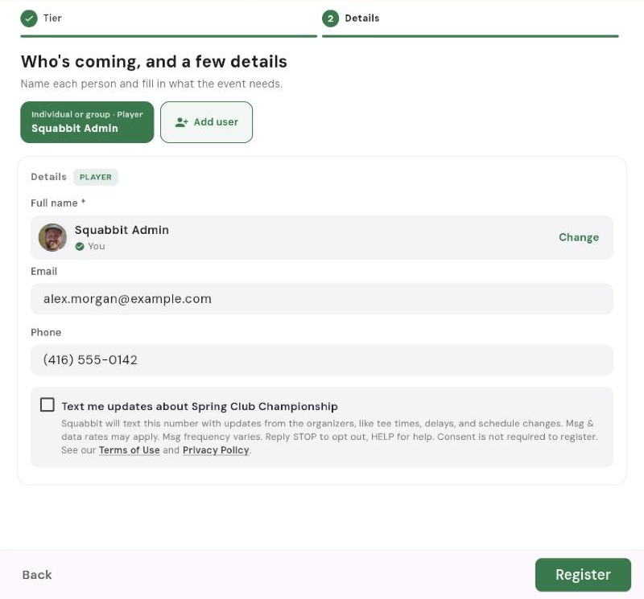

How participants agree to receive text messages from Squabbit
Squabbit is a golf app for running tournaments, leagues, and clubs. Organizers use it to send their registered participants one-way, informational text messages about their event, such as tee times, weather delays, cancellations, and schedule changes. Messages never contain marketing. Nobody receives a text unless they have opted in using one of the two methods below.
When a golfer registers for a tournament or league, or joins a club, in the Squabbit app or at squabbitgolf.com, the registration form asks for their details. Directly under the phone number field is an unticked checkbox. The golfer must tick it themselves to opt in. Registering does not require it.

The exact wording shown next to the checkbox:
Text me updates about [event name]
Squabbit will text this number with updates from the organizers, like tee times, delays, and schedule changes. Msg & data rates may apply. Msg frequency varies. Reply STOP to opt out, HELP for help. Consent is not required to register. See our Terms of Use and Privacy Policy.
The checkbox is only shown to the person whose number it is. When someone registers other players in a group, those players are not opted in. Squabbit records the time of consent, the phone number, and the version of the wording shown.
If an organizer adds a participant’s phone number themselves, that number receives no messages until its owner confirms. Squabbit sends one confirmation message:
Squabbit: [organizer] added this number for text updates about [event name]. Reply YES to receive them. Msg & data rates may apply. Msg frequency varies. Reply STOP to opt out, HELP for help.
If there is no YES reply, no further messages are sent to that number.
Squabbit (Spring Club Championship): Frost delay. Tee times this Saturday are pushed back 1 hour; your new tee time is 9:10 AM. Reply STOP to opt out.
Full program terms are in our Terms of Use, and how we handle phone numbers is in our Privacy Policy.